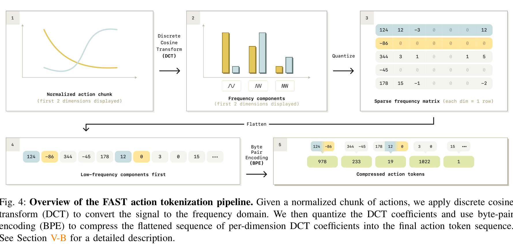
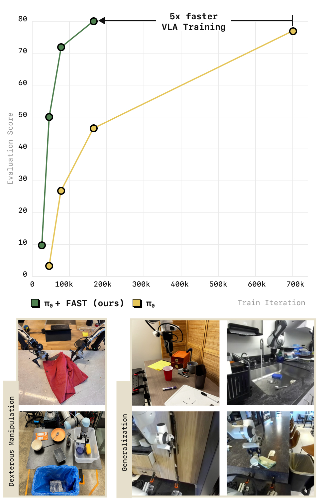

FAST: Efficient Action Tokenization for Vision-Language-Action Models
Karl Pertsch, Kyle Stachowicz, Brian Ichter, Danny Driess, Suraj Nair, Quan Vuong, Oier Mees, Chelsea Finn, Sergey Levine · Physical Intelligence · UC Berkeley · Stanford
제출: 2025년 1월 16일 (v1) · 백본 π₀ (PaliGemma 기반 VLA) · FAST+는 1M 로봇 궤적으로 사전학습된 범용 토크나이저
한 줄 요약 (TL;DR)
연속 로봇 액션(joint velocity/end-effector delta 같은 실수 벡터 시퀀스)을 자기회귀(autoregressive, 이전 토큰을 조건으로 다음 토큰을 예측) VLA에 넣기 위한 새로운 action tokenization(연속 액션을 이산 정수 토큰 열로 바꾸는 절차). 기존 "차원별·시점별 균등 구간 나누기(naive binning)"는 20 Hz 이상 고주파 액션에서 인접 토큰이 거의 동일해 학습이 무너진다. FAST는 DCT(Discrete Cosine Transform, 시간축 신호를 저→고 주파수 성분으로 분해하는 변환)로 액션 청크를 압축하고, 남은 정수 계수를 언어 모델에서 익숙한 BPE(Byte-Pair Encoding, 자주 붙어 나오는 심볼 쌍을 하나의 새 토큰으로 병합해 어휘를 만드는 무손실 압축)로 다시 압축한다. 결과: π₀-diffusion과 같은 성능을 유지하면서 학습 시간 최대 5배 단축, 그리고 DROID 데이터셋에서 처음으로 zero-shot(새 환경·조명·물체에서 미세조정 없이 언어 명령 수행) 성공한 일반화 정책을 만들었다.
1배경 · 문제의식
VLA(Vision-Language-Action model, 시각·언어 입력으로부터 로봇 액션을 직접 생성하는 대형 모델)는 크게 두 갈래로 발전해 왔다. (a) 자기회귀 방식은 액션을 정수 토큰 시퀀스로 이산화해 언어 모델과 동일한 next-token-prediction 손실로 학습한다(예: OpenVLA, RT-2). (b) 확산(diffusion)·flow-matching 방식은 연속 액션을 별도 헤드에서 생성한다(예: π₀-diffusion).
자기회귀 방식은 언어 모델 인프라를 그대로 재활용할 수 있어 매력적이지만, 지금까지의 단순 이산화 방식(per-dimension, per-timestep uniform binning — 각 액션 차원의 값 범위를 N개 구간으로 나누고 구간 번호를 토큰으로 사용)은 고주파·정밀 조작(high-frequency dexterous manipulation, 20 Hz 이상 제어 주기의 미세 조작)에서 학습에 실패한다. 이유: 인접 시점의 액션이 거의 같아서 연속된 토큰이 강한 상관관계를 가지며, 모델은 "이전 토큰을 그대로 복사"하는 지역 최적해에 빠진다.
왜 지금까지의 이산화가 실패하는가: 청크(chunk, 여러 시점의 액션을 한 덩어리로 묶은 것) 길이가 길고 제어 주기가 빠를수록 토큰 간 중복(redundancy)이 커진다. Section IV의 스플라인 회귀 didactic 실험: 25→800 시점으로 샘플링을 높일수록 naive tokenization의 예측 오차가 급증하지만, DCT 기반은 일정하게 낮게 유지된다.
2핵심 Contribution
FAST 토크나이저 — DCT(주파수 분해) + 양자화(quantization, 실수 계수를 정수로 반올림) + BPE(반복되는 정수 패턴을 어휘로 병합)의 3단계로 액션 청크를 이산 토큰 열로 압축. 청크당 30–60 토큰만으로도 충분해 기존 이산화 대비 최대 13× 토큰 수 감소.
FAST+ 범용 토크나이저 — 단일 팔·양팔·모바일 로봇 1M(백만) 궤적(5–50 Hz)으로 학습한 보편 토크나이저. 새 데이터셋마다 다시 학습할 필요 없이 그대로 재사용 가능. HuggingFace AutoProcessor 3줄로 통합.
π₀-FAST — π₀ VLA 백본에 FAST를 결합한 자기회귀 정책. 세탁물 접기·양팔 티셔츠 접기·테이블 정리·그로서리 등 dexterous 태스크에서 π₀-diffusion과 대등한 성공률을 유지하면서 학습 시간 최대 5배 단축, DROID zero-shot 언어 조건 일반화 첫 성공.
3Method — FAST 토크나이저
3.1 액션 청크와 정규화
Action chunk(액션 청크): 정책이 매 스텝 하나의 액션을 뱉는 대신, 미래 H 스텝 액션을 한꺼번에 예측하는 덩어리. 본 논문은 전 실험 통일 1초 길이 청크(예: 50 Hz면 50개 시점 × 액션 차원 D). 각 차원별로 1–99 퍼센타일 정규화로 [-1, 1] 범위에 맞춤 — 극단 이상치의 영향을 줄이는 quantile normalization.
3.2 DCT 압축 (Section V-B, Algorithm 1)
DCT(Discrete Cosine Transform): 시간축의 실수 신호를 여러 코사인 기저(basis)의 합으로 분해하는 선형 변환. JPEG 이미지 압축의 핵심으로 쓰이는 그 변환이다. 결과 계수는 저주파(전체적 추세) → 고주파(미세 진동) 순으로 정렬된다. 로봇 액션의 대부분 에너지는 저주파에 몰려 있어 고주파 계수는 대부분 0 근처가 된다.
왜 DCT가 액션에 잘 맞는가: 로봇 궤적은 대부분 부드럽게 이어진다 → 저주파 몇 개가 신호 대부분을 표현 → 나머지는 잘라내도 손실이 적다. 이 성질이 있어야 BPE로 "많은 0"을 짧게 압축할 수 있다.
정확한 절차 (Algorithm 1):
정규화된 청크 a1:H,d (각 차원 d마다) 에 DCT 적용 → 계수 cd.
Scale γ로 반올림 양자화:c̃d = round(γ · cd) (기본 γ=10). 결과 대부분이 0이 되는 희소 정수 행렬(그림 4의 3번 패널).
Flatten: 저주파 성분부터 순서대로 1차원 정수 열로 나열(그림 4의 4번 패널).
BPE(Byte-Pair Encoding): 자주 함께 나타나는 정수 쌍을 새 심볼로 병합하는 무손실 압축을 반복 학습(어휘 크기 |A|=1024). 결과: 원본보다 훨씬 짧은 정수 토큰 열(그림 4의 5번 패널).
3.3 왜 BPE도 반드시 필요한가
DCT만 하면 대부분 0인 긴 열이 남는다 → 모델은 "0을 계속 뱉기"만 배워 학습 신호가 희석된다. BPE는 이 "0…0 0 3 0…0" 같은 반복 패턴을 하나의 어휘 토큰으로 병합해 학습 신호를 응축하고 추론 속도를 높인다. Ablation에서 BPE 제거 시 롤아웃 성공률이 크게 떨어짐이 확인됨.
3.4 압축률 (Section V-B)
데이터셋 (제어 주파수 · 액션 차원)
Naive binning 토큰
FAST 토큰
압축비
BridgeV2 (5 Hz · 7D)
35
20
1.75×
DROID (15 Hz · 7D)
105
29
3.6×
Table Bussing (20 Hz · 7D)
140
28
5.0×
T-shirt Folding (50 Hz · 14D, 양팔)
700
53
13.2×
FAST는 제어 주파수와 무관하게 팔 1개당 초당 약 30개 토큰으로 일정한 편이다 — 고주파일수록 압축률이 커진다.
3.5 FAST+ 범용 토크나이저 (Section V-C)
FAST+: BPE 어휘를 태스크마다 새로 학습하는 부담을 없애기 위해, 단일 팔·양팔·모바일 등 다양한 embodiment의 1M 실 로봇 액션 궤적(5–50 Hz 혼합)으로 BPE를 한 번만 학습해 범용 어휘를 만든 것. 새 데이터셋에는 그대로 재활용 가능. HuggingFace AutoProcessor 3줄 통합.
4실험 결과 (π₀-FAST vs π₀-diffusion & baselines)
4.1 학습 수렴 속도 (Figure 1)
π₀ 전체 데이터 혼합(약 10k 시간)에서, π₀-FAST는 약 160k 스텝에서 80점 근처 평가 점수 도달. π₀-diffusion은 같은 점수까지 700k+ 스텝 필요 — 약 5× 학습 시간 단축. Table Bussing(20 Hz) 단독 학습에서도 수렴 스텝 3× 감소.
4.2 고주파 dexterous 태스크 (Figure 6/9)
Laundry folding(50 Hz, 양팔, 가장 어려움): π₀-FAST가 π₀-diffusion과 동등한 성공률. 정성적으로 세탁물 재파지·재정렬 등 fine-grained 동작 성공.
T-shirt folding(50 Hz, ARX 양팔): 소규모 데이터에서도 π₀-diffusion과 comparable.
Table Bussing(20 Hz): π₀-FAST가 π₀-diffusion보다 더 빨리 수렴하고 최종 성능 대등.
Grocery Packing / Toast: π₀-FAST 성공.
4.3 DROID zero-shot 일반화 (핵심 결과)
DROID: 스탠퍼드/버클리/워싱턴대 등에서 수집된 대규모 다중 환경 로봇 데이터셋(15 Hz Franka). 저자 지식으론 DROID로 학습한 정책이 새 환경(unseen kitchen, 처음 보는 물체)에서 언어 명령을 따라 zero-shot으로 작동한 최초 사례. 미세조정 없이 "put the marker in the box" 같은 명령을 새 씬에서 수행 성공.
4.4 아키텍처 독립성
OpenVLA 백본에도 FAST를 적용해 고주파 태스크 성능이 크게 개선 — FAST가 백본 무관한 순수 토크나이제이션 개선임을 시사.
5Ablation · 상세 분석
naive binning vs FAST (Figure 2): 20 Hz 이상 태스크에서 naive binning은 사실상 학습 불가능(성공률 near-0). FAST는 정상 학습.
DCT만 vs DCT+BPE: DCT만 있어도 binning보다는 낫지만, BPE 제거 시 롤아웃 성능이 떨어진다 — 양자화로 생긴 0의 홍수가 학습 신호를 희석시키기 때문.
FSQ(Finite Scalar Quantization, VQ-VAE 계열 학습형 벡터 양자화) vs FAST: FAST가 dexterous 실 로봇에서 FSQ와 대등하거나 우수. FSQ는 별도 신경망 학습·튜닝이 필요한 반면 FAST는 순수 신호 처리 파이프라인이라 하이퍼파라미터 튜닝이 단순.
샘플링 주파수 didactic 실험 (Figure 3): 스플라인 궤적을 25→800 시점으로 재샘플링하며 예측 MSE 측정. Naive는 주파수↑에서 오차 급증, DCT는 일정하게 낮음. 인접 토큰 상관성이 자기회귀 학습의 근본 걸림돌임을 시각적으로 보여줌.
Scale γ (양자화 강도): γ↑ 하면 더 세밀하지만 토큰 늘고, γ↓ 하면 압축은 좋지만 재구성 오차↑. γ=10이 대부분 태스크에서 균형.
6핵심 Figure / Table

Figure 4 — FAST action tokenization pipeline. ① 정규화된 액션 청크(시간축 실수 신호) → ② DCT로 주파수 성분 분해(저주파 봉만 크게 남음) → ③ 정수 양자화(대부분 0인 sparse frequency matrix) → ④ 저주파부터 flatten한 1차원 정수 열 → ⑤ BPE로 반복 패턴을 어휘 토큰으로 병합한 최종 압축 액션 토큰. (출처: arXiv:2501.09747, Fig. 4)

Figure 1 — 학습 수렴 & 태스크 스코프. (상) π₀-FAST(초록) vs π₀-diffusion(노랑) 평가 점수 vs 학습 스텝. π₀-FAST는 ~160k 스텝에서 80점 근처, π₀-diffusion은 같은 점수를 위해 700k+ 스텝 필요 — 5× 학습 시간 단축. (하) 검증 태스크: 좌 dexterous manipulation(세탁물 접기·테이블 정리), 우 generalization(새 사무실·주방 zero-shot). (출처: arXiv:2501.09747, Fig. 1)
Figure 3 (didactic 스플라인 실험): 원문 캡션 요지 — 샘플링 주파수↑에 따라 naive tokenization은 예측 오차 급증, DCT 기반은 일정. "strong correlation between consecutive tokens"이 자기회귀 학습을 무너뜨리는 원인임을 밝힌다.